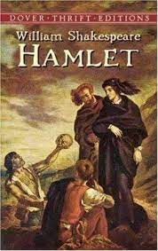

Book Review: "TOP BOOKS"
 War And Peace
War And Peace
Epic in scale, War and Peace delineates in graphic detail events leading up to Napoleon's invasion of Russia, and the impact of the Napoleonic era on Tsarist society, as seen through the eyes of fi...
 In Search Of Lost Time
In Search Of Lost Time
Swann's Way, the first part of A la recherche de temps perdu, Marcel Proust's seven-part cycle, was published in 1913. In it, Proust introduces the themes that run through the entire work. The narr...
 Hamlet
The Tragedy of Hamlet, Prince of Denmark, or more simply Hamlet, is a tragedy by William Shakespeare, believed to have been written between 1599 and 1601. The play, set in Denmark, recounts how Pri...